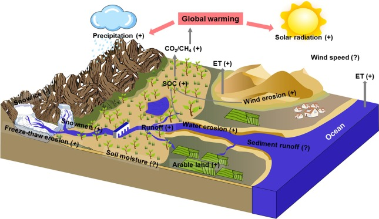
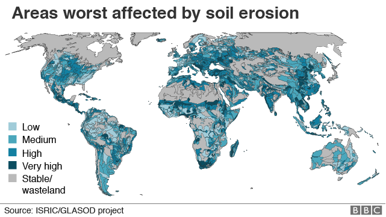

Climate Change
Many communities across the Country have been experiencing firsthand the tragic consequences of climate change, including more frequent flooding, longer wildfire seasons, more intense droughts, and coastal erosion due to sea level rise. And climate change is already impacting farming practices, even some that farmers have used for millennia. Here's how climate changes worsen the impacts of erosion.

- More frequent and intense rain events: These increase soil erosion and result in greater amounts of sediment washing into rivers, lakes, and streams-just as we saw across the Midwest in 2019.
- Hotter days: Areas of the country where precipitation decreases- and soils dry out-are not only at risk for prolonged droughts but are also more vulnerable to wind erosion.
- Larger wildfires: A recent study found that soil erosion is expected to increase as more wildfires destroy landscapes; areas with less vegetation and groundcover are more prone to erosion by wind and water. In 2017, California experienced one of its worst wildfire seasons followed by heavy rains across parts of the state. The combination resulted in deadly mudslides.
- Carbon Release: When soil erodes, it often carries away organic matter and vegetation, which contain significant amounts of carbon. When this organic matter is exposed to the elements or broken down during erosion, it releases carbon dioxide (CO2) and other greenhouse gases into the atmosphere, contributing to global warming.
- Increased Sediment Transport: Eroded soil is often transported into rivers and ultimately into the ocean. This can lead to increased sediment deposition in riverbeds and coastal areas, impacting aquatic ecosystems and affecting the carbon cycle in these environments.
- Nutrient Loss: Soil erosion can result in the loss of essential nutrients from agricultural fields, which can necessitate increased fertilizer use. The production and application of fertilizers contribute to greenhouse gas emissions, exacerbating climate change.

In addition, soil erosion can drive climate change. Soil is a vast storage center for carbon dioxide, organic matter, and microbes. But when soil becomes degraded-as through deforestation and poor farming practices-it can release carbon back into the atmosphere.